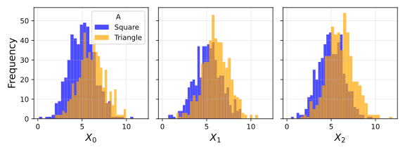
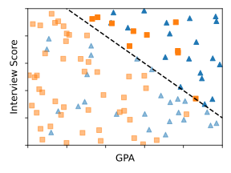
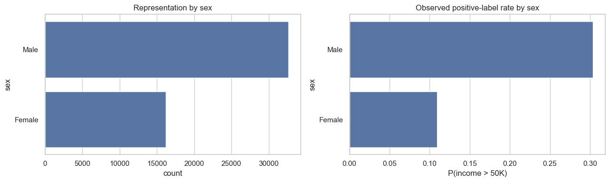
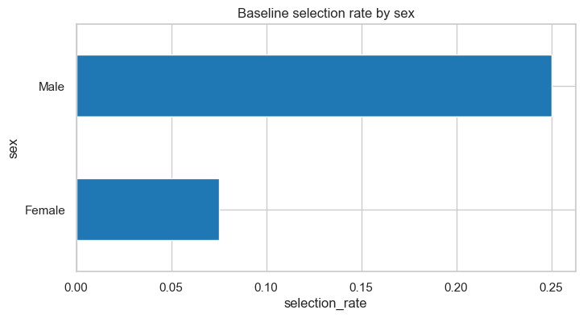
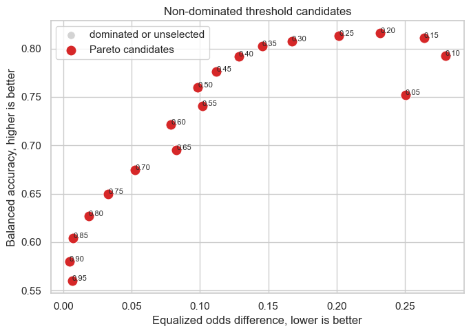
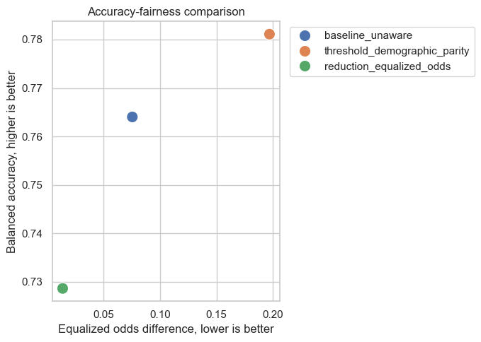

Fairness
Data-Centric AI (Module II)
Matteo Francia
DISI — University of Bologna
m.francia@unibo.it
Amazon: When Past CVs Become a Hiring Standard
- Task: an experimental tool scored candidates’ CVs to support recruiting.
- What happened: Reuters reported that training CVs from a ten-year period were mostly from men.
- The model favored male applicants. It penalized the term “women’s” and graduates of two women’s colleges.
- Consequence: Amazon abandoned the project.
- Reuters said recruiters considered its recommendations but never relied solely on its rankings.
- Data-centric lesson: historical applicant data can encode exclusion; removing explicit gender information does not remove correlated signals.
Discuss: would removing names and gendered words be enough? What evidence would show that a CV score measures job-relevant ability?
From the news
Workday must face California lawsuit over AI bias in job screening tools
Numerous surveys have found that more than 80% of U.S. employers, and virtually all Fortune 500 companies, are utilizing AI tools such as those made by Workday in the hiring process. Government agencies and worker advocates have expressed concerns that AI tools can discriminate against job applicants when they are built using data that reflects existing biases.
Gender Shades and COMPAS: Which Errors Are Hidden?
Gender Shades (2018): Buolamwini and Gebru audited three commercial systems that classified gender from faces.
- Error rates reached 34.7% for darker-skinned females, compared with a maximum of 0.8% for lighter-skinned males, using the study’s categories.
- Lesson: audit intersections of group attributes (Gender Shades paper); accuracy score can hide unequal performance.
COMPAS (2016): ProPublica reported racial disparities in false positive and false negative rates in recidivism risk scoring.
- Lesson: identify the harmful error and justify the metric used to assess it.
From the news
Why Google’s ‘woke’ AI problem won’t be an easy fix
Gemini also generated German soldiers from World War Two, incorrectly featuring a black man and Asian woman. […] Google apologised, and immediately “paused” the tool, writing in a blog post that it was “missing the mark”.
Google Gemini: When a Fairness Intervention Misses Context
- Task: generate images of people from text prompts.
- What happened: in February 2024, Gemini generated inaccurate historical depictions and refused ordinary prompts.
- Google said diversity tuning ignored contexts where a wider range of people was inappropriate.
- Excessive caution also caused refusals.
- Consequence: Google temporarily paused image generation of people and announced further testing.
- Evaluation lesson: assess representation, factual accuracy, prompt adherence, and refusal behavior together.
- Appropriate outputs depend on the request and its context.
Source: Google’s explanation, 23 February 2024.
Discuss: should an unspecified request for “a doctor” and a request for a specific historical person use the same representation policy?
Are we giving everyone the same (or, at least, comparable) treatment?
Data-centric AI: the right intervention is not always a new threshold, but better coverage, or removing a structural obstacle in the data.
1. Fairness Failures in the Real World
For each case, ask: what was the system trying to do, who was affected, and what should have been checked before deployment?
From Headlines to a Fairness Audit
These cases motivate the questions we will use throughout the lab:
- Data and proxies: who appears in the dataset, and which features encode group membership?
- Targets: does the observed label measure the outcome we actually want?
- Evaluation: which groups and intersections need separate metrics, and which errors matter most?
- Interventions: does a proposed fix improve the intended behavior across realistic contexts?
- Deployment: how do people use the output, and who bears the consequences?
We now formalize these questions before auditing and mitigating disparities in the Adult and diabetes datasets.
Prediction Setup
We frame supervised prediction with random variables:
- \(X\): observed input features, such as pixels, SAT score, income attributes, hospital admission data, or ZIP code.
- \(A\): sensitive or protected group attribute, such as race, sex, age group, or disability status.
- \(Y\): true or observed label, such as college success, loan repayment, recidivism, income, or readmission.
- \(\hat{Y}= h(X)\): the prediction produced by a learned model.
The full population distribution P(X, A, Y) is not available.
- We only have samples.
- Those samples may be missing, noisy, unlabeled, unrepresentative, or historically biased.
- This is why fairness belongs in data-centric AI: the dataset is part of the model’s behavior.
What Bias Is Not
Bias is not necessarily malicious. It can arise even when everyone involved has good intentions.
Bias is not one and done. A model may become unfair as populations, pipelines, policies, or deployment settings change.
Bias is not new. Researchers and practitioners have discussed discrimination, fairness, and measurement harms for decades.
Fairness work belongs throughout the dataset lifecycle:
- collection, annotation, and preprocessing,
- validation, monitoring, and model use.
Why Different Treatment Happens
Different treatment usually does not require a programmer to intentionally encode racism, sexism, or another discriminatory rule.
Common data causes include:
- the training set is not representative of the deployment population,
- absence of data reflects historical exclusion,
- small subgroup sample sizes do not generalize well,
- labels encode previous biased decisions,
- features include proxies for protected attributes,
- and data quality differs across groups.
So an audit should ask not only “what did the model learn?” but also “what world did the dataset measure?”
What Bias Is
A useful working definition:
A machine-learning system is biased when its data, modeling process, or deployment context creates systematically different errors, opportunities, or harms for different groups.
- Data collection bias: who appears in the data, who is missing, and under what conditions measurements are made.
- Algorithmic process bias: how features, objectives, thresholds, and validation metrics encode priorities.
- Deployment bias: how predictions are interpreted and used by humans or institutions.
Protected Classes and Regulated Domains
Sensitive attributes
- Race
- Sex
- Religion
- National origin
- Citizenship
- Pregnancy
- Disability status
- …
It also highlights regulated domains where fairness questions are especially consequential:
- Credit
- Education
- Employment
- Housing
- …
Quantitative Fairness Definitions
Use these variables:
Y: true label; Y_hat: model prediction; S: risk score.X: ordinary features; A: sensitive attribute, such as sex, race, or age group.
| Fairness through unawareness |
Do not use A directly |
proxy variables can still encode A |
| Group fairness / demographic parity |
equal positive prediction rates across groups |
may conflict with different base rates |
| Calibration |
same meaning of score S across groups |
can conflict with equal error rates |
| Error-rate balance |
equal false positive or false negative rates |
which error matters depends on the domain |
| Representational fairness |
learn representations with less group information |
useful features and sensitive information may be entangled |
| Counterfactual fairness |
prediction would not change if group membership changed in a causal model |
depends on a credible causal graph |
| Individual fairness |
similar people should receive similar decisions |
defining similarity is difficult |
Statistical Parity and Equal Opportunity
Statistical parity asks for equal positive prediction rates:
P(Y_hat = 1 | A = a) = P(Y_hat = 1 | A = b)- Usually operationalized with selection rate and demographic parity difference.
Equal opportunity asks for equal true positive rates:
P(Y_hat = 1 | Y = 1, A = a) = P(Y_hat = 1 | Y = 1, A = b)- Useful when missing qualified or truly positive cases is the central harm.
College-Admissions Toy Example
A simplified admissions task makes the issue concrete:
X is SAT score (a standardized test widely used for college admissions in the United States).A is group membership, shown as two shapes.Y is whether an applicant would succeed in college.Y_hat is the admit/reject decision.

A model can look accurate overall while one group lives in a different part of the feature space.
One group has a shifted score distribution because of external conditions such as test preparation access or retake opportunities.
- Even a “shape-blind” model may infer group membership from correlated features. Omitting
A does not remove its influence.
Incompatibility and Trade-Offs
Fairness definitions can be mutually incompatible.
- Calibration and error-rate balance generally cannot both hold when groups have different base rates, except in special cases.
That is why this lab does not ask whether a model is simply “fair” or “unfair”. Instead, we ask:
- What decision is being made?
- Which group attribute is relevant to audit?
- Which errors are most harmful?
- Is the target label a good proxy for the real-world construct?
- Which fairness metric matches the intended use?
- What data changes would reduce the problem before changing the model?
No Fair Lunch
The incompatibility result is often phrased as a no fair lunch problem. In a real-world ML system, we may want all of the following:
- statistical parity,
- equal false negative rates,
- equal false positive rates,
- high accuracy across subgroups.
In general, these cannot all be achieved simultaneously unless the groups have the same underlying distribution.
- This is rare because data collection, access, measurement, and historical decisions already differ across groups.
Fairness as a Multi-Objective Problem
A data-centric fairness workflow is naturally a multi-objective optimization problem. We rarely optimize only predictive performance.
For a model or decision rule h, we may want to:
- maximize utility:
balanced_accuracy(h), profit, recall, or another task metric,
- minimize disparity: demographic parity gap, equal opportunity gap, equalized odds gap,
- minimize data risk: missingness, subgroup undercoverage, label noise, proxy leakage,
- satisfy constraints: minimum subgroup sample size, maximum false negative gap, acceptable documentation quality.
One compact formulation is maximize (utility(h), -fairness_gap(h), -data_risk(h))
- Subject to domain constraints such as
FNR_gap(h) <= delta and support(group) >= n_min.
There are non-dominated choices: one model is better on accuracy, another is better on fairness, another may be easier to interpret.
Ways to Choose Among Objectives
| Hard constraint |
maximize accuracy subject to a fairness limit |
the limit may be arbitrary |
| Scalarization |
combine objectives, e.g. score = accuracy - lambda * disparity |
hides value choices inside weights |
| Lexicographic rule |
satisfy fairness first, then optimize accuracy |
can discard useful trade-offs |
| Pareto frontier |
keep all non-dominated candidates for review |
still requires a human decision |
COMPAS Follow-Up Questions
Keep these questions in mind as we move into the code.
- If the two-year cutoff for recidivism is implemented incorrectly, is the model unfair, invalid, or both?
- If an input question is subjective, whose subjectivity enters the data?
- Should police-search thresholds, detention thresholds, and rehabilitation-support thresholds optimize the same metric?
- If judges use scores as one input but have final authority, where should auditing happen: model, human decision, or whole system?
Visualizing Group Comparison
Fairness metrics compare model behavior across groups such as A=0 and A=1.

This is useful, but incomplete: group summaries can miss intersectional subgroups and can be unstable for small samples.
What Is [Fairlearn]](https://fairlearn.org/)?
Fairlearn is an open-source Python toolkit for assessing and mitigating fairness issues in machine learning systems.
- Assess disparities:
MetricFrame compares performance across groups and their intersections.
- Fairness metrics summarize gaps in selection or error rates.
- Mitigate disparities:
ExponentiatedGradient adds fairness constraints during training; ThresholdOptimizer adjusts decisions after training.
- Use familiar models: integrate fairness assessment and mitigation with scikit-learn estimators and tabular workflows.
In this lab: train a baseline → audit groups → apply an intervention → compare accuracy and fairness.
3. Adult Income Dataset: Understand the Data First
The Adult dataset is census-derived tabular data used in fairness tutorials. The task is to predict whether annual income exceeds 50K USD.
Code
adult = fetch_adult(as_frame=True)
X_adult_raw = clean_adult_missing_values(adult.data.copy())
y_adult = (adult.target == ">50K").astype(int)
adult_df = X_adult_raw.copy()
adult_df["income_gt_50k"] = y_adult
adult_df.head()
| 0 |
25 |
Private |
226802 |
11th |
7 |
Never-married |
Machine-op-inspct |
Own-child |
Black |
Male |
0 |
0 |
40 |
United-States |
0 |
| 1 |
38 |
Private |
89814 |
HS-grad |
9 |
Married-civ-spouse |
Farming-fishing |
Husband |
White |
Male |
0 |
0 |
50 |
United-States |
0 |
| 2 |
28 |
Local-gov |
336951 |
Assoc-acdm |
12 |
Married-civ-spouse |
Protective-serv |
Husband |
White |
Male |
0 |
0 |
40 |
United-States |
1 |
| 3 |
44 |
Private |
160323 |
Some-college |
10 |
Married-civ-spouse |
Machine-op-inspct |
Husband |
Black |
Male |
7688 |
0 |
40 |
United-States |
1 |
| 4 |
18 |
NaN |
103497 |
Some-college |
10 |
Never-married |
NaN |
Own-child |
White |
Female |
0 |
0 |
30 |
United-States |
0 |
Data profiling
Code
<class 'pandas.DataFrame'>
RangeIndex: 48842 entries, 0 to 48841
Data columns (total 15 columns):
# Column Non-Null Count Dtype
--- ------ -------------- -----
0 age 48842 non-null int64
1 workclass 46043 non-null category
2 fnlwgt 48842 non-null int64
3 education 48842 non-null category
4 education-num 48842 non-null int64
5 marital-status 48842 non-null category
6 occupation 46033 non-null category
7 relationship 48842 non-null category
8 race 48842 non-null category
9 sex 48842 non-null category
10 capital-gain 48842 non-null int64
11 capital-loss 48842 non-null int64
12 hours-per-week 48842 non-null int64
13 native-country 47985 non-null category
14 income_gt_50k 48842 non-null int64
dtypes: category(8), int64(7)
memory usage: 3.0 MB
Data-Centric Audit Questions
Before fitting a model, inspect the dataset itself.
- Who is represented most often?
- Where are values missing?
- Does the label distribution differ by group?
- Which features might act as proxies for protected attributes?
- Is income above 50K a neutral construct, or does it already reflect historical labor-market inequality?
Inspect Missing Values
Code
missing = adult_df.isna().mean().sort_values(ascending=False)
missing[missing > 0]
occupation 0.057512
workclass 0.057307
native-country 0.017546
dtype: float64
Compare Group Coverage and Label Rates
Code
describe_by_group(adult_df, "sex", "income_gt_50k")
| sex |
|
|
|
| Male |
32650 |
0.668482 |
0.303767 |
| Female |
16192 |
0.331518 |
0.109251 |
Code
describe_by_group(adult_df, "race", "income_gt_50k")
| race |
|
|
|
| White |
41762 |
0.855043 |
0.253987 |
| Black |
4685 |
0.095922 |
0.120811 |
| Asian-Pac-Islander |
1519 |
0.031100 |
0.269256 |
| Amer-Indian-Eskimo |
470 |
0.009623 |
0.117021 |
| Other |
406 |
0.008313 |
0.123153 |
Plot Representation and Observed Income

Checkpoint: Is the Label Itself Fair?
income_gt_50k is an observed outcome, not a pure measure of ability, qualification, or merit.
- Historical discrimination can be present inside the label.
Exercise: List one way each component could create disparity:
- data collection
- target definition
- feature availability
- missing-value pattern
- train/test split
- deployment threshold
4. Baseline Model and Fairness Through Unawareness
Fairness through unawareness: first we remove sex and race from the feature matrix. Problems?
Answer
Inequality Can Be in the Label
The Adult task predicts observed income, but observed income is not a neutral measurement of skill or worth.
Before changing the model, ask whether the target variable already contains the social inequality the model will learn to reproduce.
Prepare Features and Split the Adult Data
Code
sensitive_sex = X_adult_raw["sex"]
sensitive_race = X_adult_raw["race"]
X_adult_unaware = X_adult_raw.drop(columns=["sex", "race"])
X_train, X_test, y_train, y_test, sex_train, sex_test, race_train, race_test = train_test_split(
X_adult_unaware,
y_adult,
sensitive_sex,
sensitive_race,
test_size=0.30,
random_state=RANDOM_STATE,
stratify=y_adult,
)
baseline = make_tabular_pipeline(X_train)
baseline.fit(X_train, y_train)
y_pred_base = baseline.predict(X_test)
y_score_base = baseline.predict_proba(X_test)[:, 1]
print("Accuracy:", round(accuracy_score(y_test, y_pred_base), 3))
print("Balanced accuracy:", round(balanced_accuracy_score(y_test, y_pred_base), 3))
Accuracy: 0.854
Balanced accuracy: 0.764
Audit Baseline Predictions by Sex
Code
mf_sex_base = fairness_report(y_test, y_pred_base, sensitive_features=sex_test)
| accuracy |
0.853955 |
| balanced_accuracy |
0.764021 |
| selection_rate |
0.189859 |
| true_positive_rate |
0.591557 |
| false_positive_rate |
0.063515 |
| false_negative_rate |
0.408443 |
| sex |
|
|
|
|
|
|
| Female |
0.928351 |
0.753908 |
0.078032 |
0.528029 |
0.020214 |
0.471971 |
| Male |
0.817068 |
0.756352 |
0.245304 |
0.603454 |
0.090750 |
0.396546 |
Demographic parity difference: 0.167
Equalized odds difference: 0.075
Plot Selection

False Negative Rates

Interpretation
If the model predicts positive outcomes for one group much more often than another, demographic parity is violated.
- If false positive or false negative rates differ strongly, error-rate balance is violated.
A data-centric audit asks whether the observed gap comes from:
- different base rates in the collected data,
- missing or low-quality measurements for one group,
- proxy variables that reconstruct the sensitive attribute,
- an objective function that optimizes average accuracy while hiding subgroup errors,
- or a threshold that is not appropriate for all groups.
5. Intersectional Auditing
Auditing only one sensitive attribute can hide smaller groups. Fairlearn allows to audit intersections such as sex by race.
Code
intersection_test = pd.DataFrame({"sex": sex_test, "race": race_test})
mf_intersection = MetricFrame(
metrics={ "count": lambda yt, yp: len(yt), "accuracy": accuracy_score, "selection_rate": selection_rate, "false_negative_rate": false_negative_rate, },
y_true=y_test, y_pred=y_pred_base, sensitive_features=intersection_test,
)
mf_intersection.by_group.sort_values("count", ascending=False)
| sex |
race |
|
|
|
|
| Male |
White |
8569.0 |
0.812930 |
0.254639 |
0.391937 |
| Female |
White |
3886.0 |
0.924086 |
0.083891 |
0.467505 |
| Male |
Black |
762.0 |
0.868766 |
0.148294 |
0.454545 |
| Female |
Black |
709.0 |
0.956276 |
0.039492 |
0.533333 |
| Male |
Asian-Pac-Islander |
299.0 |
0.775920 |
0.304348 |
0.384615 |
| Female |
Asian-Pac-Islander |
162.0 |
0.901235 |
0.117284 |
0.434783 |
| Male |
Amer-Indian-Eskimo |
94.0 |
0.872340 |
0.117021 |
0.529412 |
| Other |
72.0 |
0.861111 |
0.083333 |
0.700000 |
| Female |
Other |
56.0 |
0.946429 |
0.053571 |
0.500000 |
| Amer-Indian-Eskimo |
44.0 |
0.931818 |
0.068182 |
0.500000 |
Checkpoint: Reliability of Subgroup Metrics
Small groups can produce noisy estimates. When a subgroup has few examples, a large disparity may be real, random, or both.
- Data-centric fixes may include collecting more data, improving subgroup coverage, or reporting uncertainty intervals.
6. Fairness Interventions: Where Do We Act?
The stage tells us where we intervene; the fairness definition tells us what we try to achieve.
| Pre-processing |
Training data or its representation |
data augmentation, reweighting, feature transformations |
| In-processing |
The learning procedure |
fairness constraints, penalties, adversarial training |
| Post-processing |
Decisions from an already trained model |
group-specific thresholds, randomized decision rules |
Pipeline: data → pre-processing → training with in-processing → scores → post-processing → decisions.
Pre-Processing: Change the Data Before Training
- Adjust training examples, weights, labels, or features to address a documented disparity.
- Data augmentation: reuse the techniques from the data augmentation lab.
- Target underrepresented groups or group-label combinations.
- Other examples: reweight group-label combinations or transform features to reduce sensitive-information leakage.
In this lab: removing a suspected proxy and retraining is a pre-processing experiment.
- Removing
sex and race alone is fairness through unawareness; correlated features can preserve disparity.
- Limit: changing the data does not guarantee the selected fairness criterion will hold.
In-Processing: Change How the Model Learns
- Optimize predictive performance subject to a fairness constraint, or add a disparity penalty to the objective.
- Examples: constrained optimization, adversarial debiasing, and reduction-based learning.
- Requires access to training; group constraints generally require sensitive attributes during fitting.
In this lab: ExponentiatedGradient uses an EqualizedOdds() constraint.
- It repeatedly retrains a base estimator with adapted example weights to seek a constrained solution.
- This is in-processing: weights change inside the fairness-constrained learning procedure.W
- They are not fixed once before training.
Limit: improving the chosen constraint can reduce utility or leave other disparities unresolved.
Post-Processing: Change Decisions After Training
- Keep the fitted predictive model fixed and adjust how its scores become decisions.
- Examples: group-specific thresholds and randomized decisions chosen for a fairness constraint.
- Requires validation or calibration data; fitting a decision rule is still a learning step. Keep the final test set separate.
In this lab: ThresholdOptimizer with prefit=True adjusts decisions for demographic parity.
- Its group-specific rule needs
sensitive_features when predicting.
- A single global threshold sweep also acts after training, but does not automatically enforce a fairness criterion.
Limit: decision changes cannot repair missing population coverage or an invalid target label.
Source for the methods: Fairlearn mitigation guide.
Mitigation A: Post-Processing with ThresholdOptimizer
ThresholdOptimizer changes decision thresholds by sensitive group after a model is trained.
- This is useful when scores are available and the deployment decision is threshold-based.
- Here we enforce demographic parity.
- That means selection rates are pushed closer together. Whether this is desirable depends on the application.
Code
threshold_dp = ThresholdOptimizer(estimator=baseline, constraints="demographic_parity", objective="balanced_accuracy_score", predict_method="predict_proba", prefit=True,)
threshold_dp.fit(X_train, y_train, sensitive_features=sex_train)
y_pred_threshold_dp = threshold_dp.predict(X_test, sensitive_features=sex_test)
mf_threshold_dp = fairness_report(y_test, y_pred_threshold_dp, sensitive_features=sex_test)
| accuracy |
0.784276 |
| balanced_accuracy |
0.780691 |
| selection_rate |
0.346755 |
| true_positive_rate |
0.773816 |
| false_positive_rate |
0.212434 |
| false_negative_rate |
0.226184 |
| sex |
|
|
|
|
|
|
| Female |
0.737286 |
0.824974 |
0.362569 |
0.938517 |
0.288569 |
0.061483 |
| Male |
0.807575 |
0.789213 |
0.338914 |
0.742973 |
0.164548 |
0.257027 |
Demographic parity difference: 0.024
Equalized odds difference: 0.196
Mitigation B: In-Processing with ExponentiatedGradient
ExponentiatedGradient trains a randomized classifier subject to a fairness constraint. Unlike thresholding, it changes the training objective.
- Who is incorrectly marked high risk?
- Who is incorrectly marked low risk?
Code
base_for_reduction = make_tabular_pipeline(X_train)
reduction_eo = ExponentiatedGradient(estimator=base_for_reduction, constraints=EqualizedOdds(), eps=0.02, max_iter=25, sample_weight_name="model__sample_weight",)
reduction_eo.fit(X_train, y_train, sensitive_features=sex_train)
y_pred_reduction_eo = reduction_eo.predict(X_test)
mf_reduction_eo = fairness_report(y_test, y_pred_reduction_eo, sensitive_features=sex_test)
| accuracy |
0.839419 |
| balanced_accuracy |
0.727779 |
| selection_rate |
0.167133 |
| true_positive_rate |
0.513691 |
| false_positive_rate |
0.058132 |
| false_negative_rate |
0.486309 |
| sex |
|
|
|
|
|
|
| Female |
0.901997 |
0.737462 |
0.103562 |
0.524412 |
0.049489 |
0.475588 |
| Male |
0.808391 |
0.724057 |
0.198653 |
0.511683 |
0.063569 |
0.488317 |
Demographic parity difference: 0.095
Equalized odds difference: 0.014
Compare Baseline and Mitigated Models
| 0 |
baseline_unaware |
0.854 |
0.764 |
0.167 |
0.075 |
| 1 |
threshold_demographic_parity |
0.784 |
0.781 |
0.024 |
0.196 |
| 2 |
reduction_equalized_odds |
0.839 |
0.728 |
0.095 |
0.014 |
Exercise: Build a Small Multi-Objective Frontier
The frontier does not tell us which trade-off is appropriate. It only shows what trade-offs are available under a modeling setup.
Here we sweep a single global decision threshold and evaluate each threshold as a candidate solution with multiple objectives:
maximize balanced accuracy,
minimize demographic parity difference,
minimize equal opportunity difference,
minimize equalized odds difference.
The sweep illustrates trade-offs among accuracy and fairness metrics.
- A global threshold alone does not guarantee fairness.
Score Candidates with a Fairness Weight
Code
# Example scalarization: change lambda_fairness to express a different value judgment.
lambda_fairness = 0.5
threshold_sweep["scalarized_score"] = threshold_sweep["balanced_accuracy"] - lambda_fairness * threshold_sweep["equalized_odds_diff"]
threshold_sweep.sort_values(["pareto_candidate", "scalarized_score"], ascending=[False, False]).round(3)
| 7 |
0.40 |
0.794 |
0.239 |
0.205 |
0.085 |
0.101 |
True |
0.743 |
| 6 |
0.35 |
0.805 |
0.270 |
0.229 |
0.088 |
0.125 |
True |
0.743 |
| 8 |
0.45 |
0.779 |
0.212 |
0.187 |
0.082 |
0.086 |
True |
0.736 |
| 5 |
0.30 |
0.813 |
0.309 |
0.260 |
0.104 |
0.157 |
True |
0.734 |
| 9 |
0.50 |
0.764 |
0.190 |
0.167 |
0.075 |
0.075 |
True |
0.726 |
| 4 |
0.25 |
0.817 |
0.352 |
0.299 |
0.118 |
0.201 |
True |
0.717 |
| 10 |
0.55 |
0.742 |
0.166 |
0.149 |
0.076 |
0.076 |
True |
0.704 |
| 3 |
0.20 |
0.817 |
0.396 |
0.330 |
0.112 |
0.239 |
True |
0.697 |
| 11 |
0.60 |
0.720 |
0.145 |
0.131 |
0.067 |
0.067 |
True |
0.686 |
| 2 |
0.15 |
0.810 |
0.443 |
0.352 |
0.102 |
0.272 |
True |
0.674 |
| 12 |
0.65 |
0.699 |
0.125 |
0.111 |
0.065 |
0.065 |
True |
0.666 |
| 13 |
0.70 |
0.680 |
0.105 |
0.090 |
0.046 |
0.046 |
True |
0.657 |
| 1 |
0.10 |
0.793 |
0.504 |
0.348 |
0.063 |
0.281 |
True |
0.653 |
| 14 |
0.75 |
0.655 |
0.087 |
0.073 |
0.022 |
0.022 |
True |
0.643 |
| 0 |
0.05 |
0.747 |
0.604 |
0.292 |
0.020 |
0.242 |
True |
0.626 |
| 15 |
0.80 |
0.627 |
0.069 |
0.059 |
0.026 |
0.026 |
True |
0.614 |
| 16 |
0.85 |
0.600 |
0.053 |
0.043 |
0.005 |
0.006 |
True |
0.597 |
| 17 |
0.90 |
0.577 |
0.039 |
0.033 |
0.012 |
0.012 |
True |
0.571 |
| 18 |
0.95 |
0.555 |
0.027 |
0.022 |
0.005 |
0.005 |
True |
0.553 |
Highlight Pareto Candidates

Checkpoint: Multi-Objective Decision
Choose one threshold or mitigation strategy and justify it using a decision rule:
- Constraint: “I require equalized odds difference below X, then choose the highest balanced accuracy.”
- Scalarization: “I use this value of
lambda_fairness because this domain makes disparity costly.”
- Frontier review: “I keep these candidates and reject dominated ones, then make a policy decision.”
Then explain what data-centric action could move the frontier itself, not merely choose a different point on it.
Compare Mitigation Trade-Offs

Checkpoint: Which Mitigation Is Defensible?
- Which model has the best average performance?
- Which model most improves the fairness metric you selected?
- What changed: data, model, threshold, or evaluation?
- Would you deploy a group-specific threshold in this domain? Why or why not?
- What missing information would you need before making a policy recommendation?
Data Heterogeneity and Proxy Targets
Two data-centric warnings matter for the second case study:
Data heterogeneity: groups can differ in feature distributions, measurement quality, and clinical histories.
- Language used in records may also differ. An average model can hide these patterns.
Proxy targets: an objective-looking label may measure the wrong thing.
- Predicting healthcare cost may reflect unequal access and spending rather than illness.
What does readmitted_30_days measure?
- Patient need, hospital behavior, patient access, or a mixture of all three?
Inspect a Suspected Proxy Feature
Code
# Exercise: inspect possible proxy features for sex.
# Categorical features with very different distributions across groups deserve domain review.
candidate_proxy = "relationship"
proxy_table = pd.crosstab(adult_df[candidate_proxy], adult_df["sex"], normalize="columns")
proxy_table.sort_values(proxy_table.columns[0], ascending=False)
| relationship |
|
|
| Not-in-family |
0.362525 |
0.205605 |
| Unmarried |
0.242589 |
0.036662 |
| Own-child |
0.208498 |
0.128790 |
| Wife |
0.143775 |
0.000092 |
| Other-relative |
0.042552 |
0.025023 |
| Husband |
0.000062 |
0.603828 |
Remove a Proxy and Repeat the Audit
Code
less_proxy_model = make_tabular_pipeline(X_train)
less_proxy_model.fit(X_train, y_train)
y_pred_less_proxy = less_proxy_model.predict(X_test)
fairness_report(y_test, y_pred_less_proxy, sensitive_features=sex_test)
| accuracy |
0.853955 |
| balanced_accuracy |
0.764021 |
| selection_rate |
0.189859 |
| true_positive_rate |
0.591557 |
| false_positive_rate |
0.063515 |
| false_negative_rate |
0.408443 |
| sex |
|
|
|
|
|
|
| Female |
0.928351 |
0.753908 |
0.078032 |
0.528029 |
0.020214 |
0.471971 |
| Male |
0.817068 |
0.756352 |
0.245304 |
0.603454 |
0.090750 |
0.396546 |
Demographic parity difference: 0.167
Equalized odds difference: 0.075
<fairlearn.metrics._metric_frame.MetricFrame at 0x79fe357888d0>
Remove a Proxy and Repeat the Audit
Code
proxy_features_to_remove = ["relationship"]
X_train_less_proxy = X_train.drop(columns=[c for c in proxy_features_to_remove if c in X_train.columns])
X_test_less_proxy = X_test.drop(columns=[c for c in proxy_features_to_remove if c in X_test.columns])
less_proxy_model = make_tabular_pipeline(X_train_less_proxy)
less_proxy_model.fit(X_train_less_proxy, y_train)
y_pred_less_proxy = less_proxy_model.predict(X_test_less_proxy)
fairness_report(y_test, y_pred_less_proxy, sensitive_features=sex_test)
| accuracy |
0.853409 |
| balanced_accuracy |
0.761512 |
| selection_rate |
0.187402 |
| true_positive_rate |
0.585282 |
| false_positive_rate |
0.062259 |
| false_negative_rate |
0.414718 |
| sex |
|
|
|
|
|
|
| Female |
0.925880 |
0.717842 |
0.062384 |
0.448463 |
0.012779 |
0.551537 |
| Male |
0.817477 |
0.758762 |
0.249388 |
0.610904 |
0.093380 |
0.389096 |
Demographic parity difference: 0.187
Equalized odds difference: 0.162
<fairlearn.metrics._metric_frame.MetricFrame at 0x79fe355bf350>
8. Exercise: Diabetes Hospital Readmission
The Diabetes 130-Hospitals dataset contains admissions for patients diagnosed with diabetes.
- The target is readmission within 30 days.
This fairness problem differs from Adult income.
- A positive prediction can trigger extra care or burdensome interventions.
- Choose the fairness metric based on the action attached to the prediction.
Code
diabetes = fetch_diabetes_hospital(as_frame=True)
X_diab_raw = diabetes.data.copy().reset_index(drop=True)
y_diab_raw = pd.Series(diabetes.target).reset_index(drop=True)
if pd.api.types.is_numeric_dtype(y_diab_raw):
y_diab = y_diab_raw.astype(int)
else:
y_diab = y_diab_raw.astype(str).str.lower().isin(["1", "true", "yes", "readmitted", "<30"]).astype(int)
diab_df = X_diab_raw.copy()
diab_df["readmitted_30_days"] = y_diab
print("Rows:", diab_df.shape[0], "Columns:", diab_df.shape[1])
diab_df.head()
| 0 |
Caucasian |
Female |
'30 years or younger' |
Other |
Referral |
1 |
Other |
41 |
0 |
1 |
... |
No |
No |
False |
False |
False |
False |
False |
NO |
0 |
0 |
| 1 |
Caucasian |
Female |
'30 years or younger' |
'Discharged to Home' |
Emergency |
3 |
Missing |
59 |
0 |
18 |
... |
Ch |
Yes |
False |
False |
False |
False |
False |
>30 |
1 |
0 |
| 2 |
AfricanAmerican |
Female |
'30 years or younger' |
'Discharged to Home' |
Emergency |
2 |
Missing |
11 |
5 |
13 |
... |
No |
Yes |
False |
False |
False |
True |
True |
NO |
0 |
0 |
| 3 |
Caucasian |
Male |
'30-60 years' |
'Discharged to Home' |
Emergency |
2 |
Missing |
44 |
1 |
16 |
... |
Ch |
Yes |
False |
False |
False |
False |
False |
NO |
0 |
0 |
| 4 |
Caucasian |
Male |
'30-60 years' |
'Discharged to Home' |
Emergency |
1 |
Missing |
51 |
0 |
8 |
... |
Ch |
Yes |
False |
False |
False |
False |
False |
NO |
0 |
0 |
5 rows × 25 columns
Inspect the Readmission Dataset Schema
Code
<class 'pandas.DataFrame'>
RangeIndex: 101766 entries, 0 to 101765
Data columns (total 25 columns):
# Column Non-Null Count Dtype
--- ------ -------------- -----
0 race 101766 non-null str
1 gender 101766 non-null str
2 age 101766 non-null str
3 discharge_disposition_id 101766 non-null str
4 admission_source_id 101766 non-null str
5 time_in_hospital 101766 non-null int64
6 medical_specialty 101766 non-null str
7 num_lab_procedures 101766 non-null int64
8 num_procedures 101766 non-null int64
9 num_medications 101766 non-null int64
10 primary_diagnosis 101766 non-null str
11 number_diagnoses 101766 non-null int64
12 max_glu_serum 101766 non-null str
13 A1Cresult 101766 non-null str
14 insulin 101766 non-null str
15 change 101766 non-null str
16 diabetesMed 101766 non-null str
17 medicare 101766 non-null category
18 medicaid 101766 non-null category
19 had_emergency 101766 non-null category
20 had_inpatient_days 101766 non-null category
21 had_outpatient_days 101766 non-null category
22 readmitted 101766 non-null str
23 readmit_binary 101766 non-null int64
24 readmitted_30_days 101766 non-null int64
dtypes: category(5), int64(7), str(13)
memory usage: 16.0 MB
Choose a Sensitive Feature
This dataset includes demographic and clinical variables.
- Audit
race when available.
- If the schema differs, inspect the columns and choose another demographic feature, such as age.
Inspect Coverage of the Sensitive Groups
Code
# sensitive_col = ...
# describe_by_group(diab_df, sensitive_col, "readmitted_30_days")
Split the Readmission Data
Code
# X_diab = X_diab_raw.drop(columns=[???])
# X_d_train, X_d_test, y_d_train, y_d_test, a_d_train, a_d_test = train_test_split(
# X_diab,
# y_diab,
# X_diab_raw[sensitive_col],
# test_size=0.30,
# random_state=RANDOM_STATE,
# stratify=y_diab,
# )
Train the Readmission Model
Code
# diabetes_model = make_tabular_pipeline(X_d_train)
# diabetes_model.fit(X_d_train, y_d_test)
# y_d_pred = diabetes_model.predict(X_d_test)
Audit Readmission Predictions by Group
Code
# mf_diabetes = fairness_report(y_d_test, y_d_pred, sensitive_features=???)
Healthcare Interpretation
For readmission prediction:
- A false negative may miss a patient who needs follow-up.
- A false positive may cause unnecessary outreach, cost, or monitoring.
Data-centric questions:
- Is readmission within 30 days a proxy for patient need, hospital access, insurance, or care quality?
- Are some groups less likely to return to the same hospital even when they are still sick?
- Are diagnostic codes and procedures measured consistently across hospitals and groups?
- Does the dataset encode treatment history, or only outcomes after unequal treatment has already occurred?
Fairness Decision Memo
Write a short memo for one of the two datasets.
Include:
- the decision the model supports,
- the sensitive feature audited,
- the fairness definition you selected,
- the metric evidence,
- the data problems you found,
- one model-level mitigation and whether it acts during or after training,
- one data-centric mitigation and whether it acts before training,
- the multi-objective decision rule you used,
- one reason your conclusion could still be wrong.
Closing Questions
- How can we build inclusive algorithms and datasets?
- For which settings should algorithms be used at all?
- Can we ever promise that an algorithm is fair?
- When should humans decide, when should algorithms decide, and when should neither be trusted without institutional change?
- Which point on the multi-objective frontier is acceptable for this domain, and who gets to decide?
References and Further Reading
- Bias and Fairness in Machine Learning, Irene Y. Chen (
slides/other/bias_fairness.pdf).
- Fairlearn documentation: https://fairlearn.org/
- Gender Shades project: http://gendershades.org/overview.html
- ProPublica COMPAS analysis: https://www.propublica.org/article/machine-bias-risk-assessments-in-criminal-sentencing
- Chouldechova, A. (2017). Fair prediction with disparate impact.
- Dwork et al. (2012). Fairness through awareness.
- Zemel et al. (2013). Learning fair representations.
- Lecture 27: Algorithmic Fairness, CSE 312 Foundations of Computing II (
slides/other/Lecture-27-algorithmic-fairness-B.pdf).